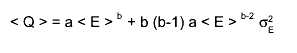

class KLindhard
KLindhard.cxx Author: Adam Cox <mailto:adam.cox@kit.edu> *Copyright 2010 Karlsruhe Inst. of Technology. All Rights Reserved. A wrapper for a Lindhard formula, which uses a TF1. The Lindhard formula for the quenching factor of a nuclear recoil as a function of energy is Q = A * E^(B) where E is the recoil energy of the nucleus and A, and B are constants that are dependent upon the material. For Germanium, these values are A = 0.165 and B = 0.185. However, this class allows you to change those values via the SetParameterA/B methods.
Function Members (Methods)
public:
| KLindhard() | |
| KLindhard(const KLindhard&) | |
| virtual | ~KLindhard() |
| static TClass* | Class() |
| static Double_t | GetArcLength(Double_t anEnergyRecoil, Double_t aScaleFactor = 1, Double_t aRefEnergyRecoil = 0) |
| static Double_t | GetEOfMinDistanceLindhard(Double_t anEnergyRecoil, Double_t aQ, Double_t aScaleEnergyRecoil = 1, Double_t aScaleQ = 1, const Char_t* aMinimizer = "GSLMultiMin", const Char_t* aMethod = "SteepestDescent", Int_t aMaxNumFunctionCalls = 100000, Int_t aMaxNumIterations = 10000, Double_t aTolerance = 0.0001) |
| TF1* | GetFormula() const |
| static Double_t | GetMinDistanceToLindhard(Double_t anEnergyRecoil, Double_t aQ, Double_t aScaleEnergyRecoil = 1, Double_t aScaleQ = 1, const Char_t* aMinimizer = "GSLMultiMin", const Char_t* aMethod = "SteepestDescent", Int_t aMaxNumFunctionCalls = 100000, Int_t aMaxNumIterations = 10000, Double_t aTolerance = 0.0001) |
| Double_t | GetParameterA() const |
| Double_t | GetParameterB() const |
| Double_t | GetQMeanValue(Double_t anEnergy, Double_t anEnergyUncertainty) const |
| Double_t | GetQValue(Double_t anEnergy) const |
| virtual TClass* | IsA() const |
| KLindhard& | operator=(const KLindhard&) |
| void | SetParameterA(Double_t aVal) |
| void | SetParameterB(Double_t aVal) |
| virtual void | ShowMembers(TMemberInspector&) |
| virtual void | Streamer(TBuffer&) |
| void | StreamerNVirtual(TBuffer& ClassDef_StreamerNVirtual_b) |
Class Charts
| Inheritance Chart: | |||||
|
Function documentation
~KLindhard(void)
Double_t GetParameterA(void)
Double_t GetParameterB(void)
void SetParameterA(Double_t aVal)
void SetParameterB(Double_t aVal)
Double_t GetQMeanValue(Double_t anEnergy, Double_t anEnergyUncertainty) const
This method calculates the Q mean value for binned data with mean "anEnergy" and uncertainty "anEnergyUncertainty" in 2nd order approximation 
Double_t GetEOfMinDistanceLindhard(Double_t anEnergyRecoil, Double_t aQ, Double_t aScaleEnergyRecoil = 1, Double_t aScaleQ = 1, const Char_t* aMinimizer = "GSLMultiMin", const Char_t* aMethod = "SteepestDescent", Int_t aMaxNumFunctionCalls = 100000, Int_t aMaxNumIterations = 10000, Double_t aTolerance = 0.0001)
This method calculates the corresponding E_Recoil for the Lindhard function for the least distance between an arbitrary point (anERecoil,aQ) and a point of the LindhardFunction possible minimizers are ROOT::Math::Factory::CreateMinimizer("Minuit2", "Migrad"); ROOT::Math::Factory::CreateMinimizer("Minuit2", "Simplex"); ROOT::Math::Factory::CreateMinimizer("Minuit2","Combined"); ROOT::Math::Factory::CreateMinimizer("Minuit2", "Scan"); ROOT::Math::Factory::CreateMinimizer("Minuit2", "Fumili"); ROOT::Math::Factory::CreateMinimizer("GSLMultiMin", "ConjugateFR"); ROOT::Math::Factory::CreateMinimizer("GSLMultiMin", "ConjugatePR"); ROOT::Math::Factory::CreateMinimizer("GSLMultiMin", "BFGS"); ROOT::Math::Factory::CreateMinimizer("GSLMultiMin", "BFGS2"); ROOT::Math::Factory::CreateMinimizer("GSLMultiMin", "SteepestDescent"); ROOT::Math::Factory::CreateMinimizer("GSLMultiFit", ""); ROOT::Math::Factory::CreateMinimizer("GSLSimAn", ""); GSLMultiMin SteepestDescent is used by default
Double_t GetMinDistanceToLindhard(Double_t anEnergyRecoil, Double_t aQ, Double_t aScaleEnergyRecoil = 1, Double_t aScaleQ = 1, const Char_t* aMinimizer = "GSLMultiMin", const Char_t* aMethod = "SteepestDescent", Int_t aMaxNumFunctionCalls = 100000, Int_t aMaxNumIterations = 10000, Double_t aTolerance = 0.0001)
This method calculates the least Euclidean distance between an arbitrary point (anERecoil,aQ) and a point of the Lindhard function in the ERecoil-Q-plane possible minimizers are ROOT::Math::Factory::CreateMinimizer("Minuit2", "Migrad"); ROOT::Math::Factory::CreateMinimizer("Minuit2", "Simplex"); ROOT::Math::Factory::CreateMinimizer("Minuit2","Combined"); ROOT::Math::Factory::CreateMinimizer("Minuit2", "Scan"); ROOT::Math::Factory::CreateMinimizer("Minuit2", "Fumili"); ROOT::Math::Factory::CreateMinimizer("GSLMultiMin", "ConjugateFR"); ROOT::Math::Factory::CreateMinimizer("GSLMultiMin", "ConjugatePR"); ROOT::Math::Factory::CreateMinimizer("GSLMultiMin", "BFGS"); ROOT::Math::Factory::CreateMinimizer("GSLMultiMin", "BFGS2"); ROOT::Math::Factory::CreateMinimizer("GSLMultiMin", "SteepestDescent"); ROOT::Math::Factory::CreateMinimizer("GSLMultiFit", ""); ROOT::Math::Factory::CreateMinimizer("GSLSimAn", ""); GSLMultiMin SteepestDescent is used by default
Double_t GetArcLength(Double_t anEnergyRecoil, Double_t aScaleFactor = 1, Double_t aRefEnergyRecoil = 0)
This method calculates the arc length s(E_Recoil) on the Lindhard function for a specified recoil energy with respect to the origin, where s(0)= 0 The scale factor is the recoil energy in keV which corresponds to one unit length on the Q axis